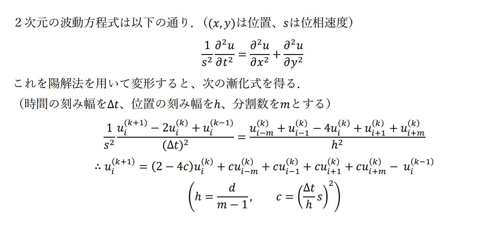
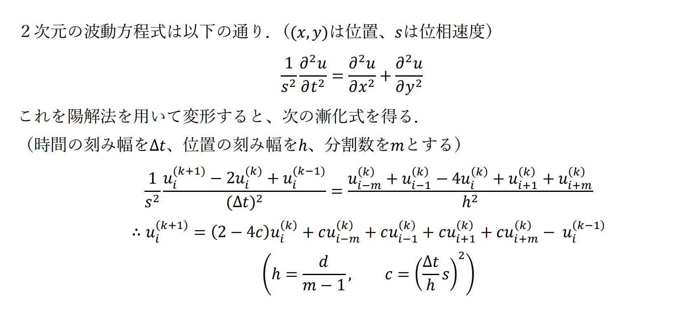

1.MATLABを用いたシミュレーション
授業で「熱伝導シミュレーション」をMATLABを用いて行いました。「社会現象や物理現象をMATLABでシミュレーションせよ」という課題が出され、私は波動方程式の解の動きをシミュレーションしました。
期末課題について
目的：２次元の波動方程式の解の時間による動きをグラフで可視化する。
解法：陽解法を用いる。
上記の漸化式をMATLABプログラムで解いて、グラフに出力する。
作成したGUIアプリケーションがこちら↓
MATLABで勉強したことをここに記録していきます
授業で「熱伝導シミュレーション」をMATLABを用いて行いました。「社会現象や物理現象をMATLABでシミュレーションせよ」という課題が出され、私は波動方程式の解の動きをシミュレーションしました。
目的：２次元の波動方程式の解の時間による動きをグラフで可視化する。
解法：陽解法を用いる。
上記の漸化式をMATLABプログラムで解いて、グラフに出力する。
作成したGUIアプリケーションがこちら↓